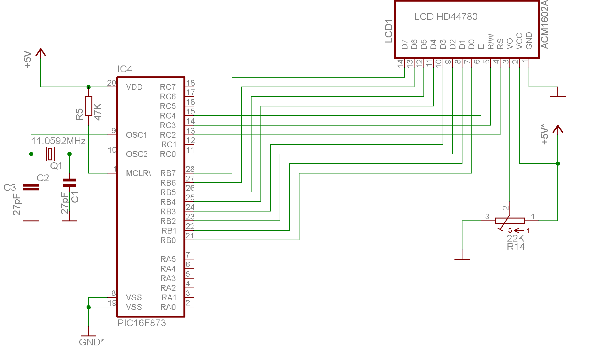

AFFICHEUR LCD EN MODE 8 BITS

Bien qu'utilisant 11 lignes de port, ce mode de fonctionnement est le plus facile et le plus couramment utilisé. Les 8 lignes du port B sont connectées au bus data de l'afficheur. Les trois lignes RC2-4 servent à la commande. Pour utiliser ces fonctions, incorporez à votre programme ces quelques lignes ou compilez le fichier .obj obtenu et ajouter à votre programme: #include "lcd_8.h". Votre fonction "main" doit appeler la fonction "init_lcd()" avant d'écrire dans l'afficheur LCD.
Télécharger le programme
/*
* Routines LCD en mode donnees 8 bits 2x16 caractères
*
* Claude Dreschel <Claudedel@wanadoo.fr>
*
* Test avec l' afficheur LTN211 Philips (compatible controleur LCD Hitachi HD44780).
* Les 14 pins de l'afficheur sont connectees ainsi:
*
* PORTB bits 0-7 : LCD pins 7-14 (Data)
* PORTC bit 2 : LCD_RS pin 4 (LCD Register Select)
* PORTC bit 3 : LCD_RW pin 5 (LCD Read Write)
* PORTC bit 4 : LCD_EN pin 6 (LCD Enable)
* Masse : LCD pin 1
* +5V : LCD pin 2
* Var_pot : LCD pin 3
*/#include <pic1687x.h>
#include "delay.h"static bit LCD_RS @ ((unsigned)&PORTC*8+0); // Register Select
static bit LCD_RW @ ((unsigned)&PORTC*8+1); // Read/Write LCD
static bit LCD_EN @ ((unsigned)&PORTC*8+2); // LCD Enable
static bit flag_busy @ ((unsigned)&PORTB*8+7);
#define PORT_DATA PORTB
#define NOP asm("nop")
#define LCD_STROBE LCD_EN = 1;NOP;NOP;LCD_EN=0
#define PORTB_IN 0xFF
#define PORTB_OUT 0x0
#define INIT_PORTC TRISC=0b11000111 //PortC
/* initialise l'afficheur LCD en mode 8 bits */void
init_lcd(void)
{
TRISB=PORTB_OUT;
INIT_PORTC;
LCD_RW=0;
LCD_RS=0;
LCD_EN=0;
DelayMs(25);
lcd_write(0x30);
Delay100Us();
lcd_write(0x30);
DelayMs(5);*/
lcd_write_instr(0x38); // Mode 8 bit, 2/16, font 5x7
lcd_write_instr(0x08); // affichage off
lcd_write_instr(0x01); // clear et home
lcd_write_instr(0x0C); // Affichage on, curseur clign off
lcd_write_instr(0x06); // pas de decalage
}/*
* Test le bit BF jusqu'a ce que le LCD soit ok
*/void
lcd_busy(void)
{
static bit LCD_BF;
TRISB = PORTB_IN; // Data en entree
LCD_RS = 0; // selectionne registre
LCD_RW = 1; // en lecture
do
{
NOP;
LCD_EN=1;
NOP;
LCD_BF = flag_busy;
LCD_EN=0;
} while(LCD_BF); // Boucle tant que BF=1
LCD_RW=0;
TRISB=PORTB_OUT; // data en sortie
}
// Ecriture d'un octet dans le LCD en mode 8 bitsvoid
lcd_write(unsigned char c)
{
PORT_DATA = c ;
NOP;
LCD_STROBE;
}
/*
* Ecrit une instruction dans LCD
*/
void
lcd_write_instr(unsigned char c)
{
lcd_busy();
LCD_RS = 0; // acces registre
lcd_write(c);
}
/* Ecriture d'un caractere sur l'afficheur LCD */void
lcd_putch(unsigned char c)
{
lcd_busy();
LCD_RS = 1;
lcd_write(c);
}
// Ecriture d'une chaine de caracteresvoid
lcd_puts(const unsigned char * s)
{
while(*s)
lcd_putch(*s++);}
/*
* Positionne le curseur ligne, position
* la premiere ligne est la ligne 0
*/void
lcd_pos(unsigned char ligne,unsigned char pos)
{
lcd_write_instr(((ligne * 0x40)+pos)+0x80);
}
/*
* Efface l'ecran et curseur home
*/void
lcd_clear(void)
{
lcd_write_instr(0x1);
}
/*
* Curseur Home
*/
void
lcd_home(void)
{
lcd_write_instr(0x02);
}
/*
* Fait clignoter le caractere affiche
*/
void
lcd_clign_on(void)
{
lcd_write_instr(0x0D);
}
/*
* Arrete le clignotement
*/
void
lcd_clign_off(void)
{
lcd_write_instr(0x0C);
}
/*
* decalage a gauche
*/
void
lcd_decal_gauche(void)
{
lcd_write_instr(0x4);
}
/*
* decalage a droite
*/
void
lcd_decal_droite(void)
{
lcd_write_instr(0x6);
}